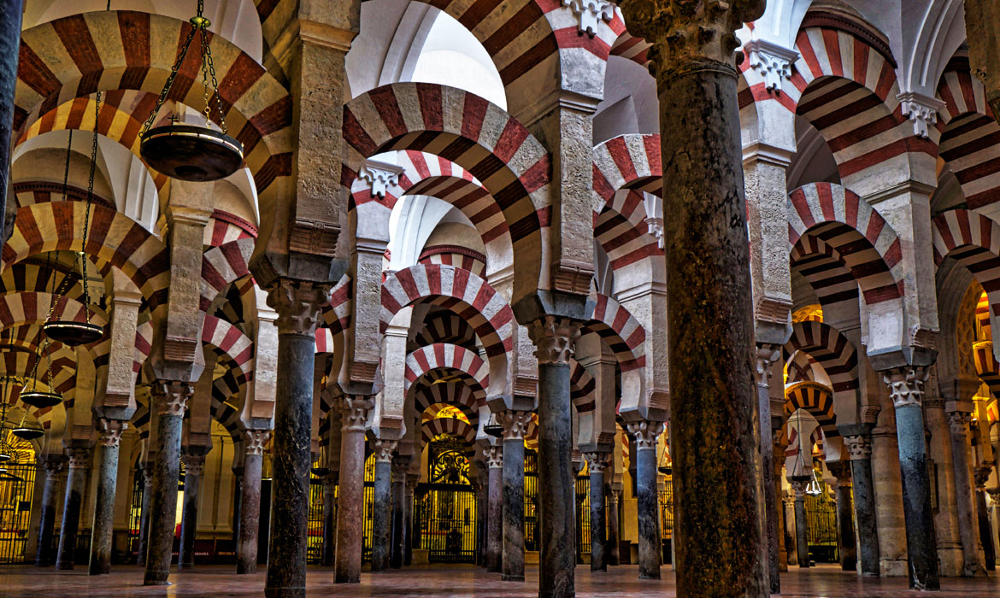

La Mezquita-Catedral de Córdoba (Patrimonio de la Humanidad desde 1984) es el monumento más importante de todo el Occidente islámico y uno de los más asombrosos del mundo. En su historia se resume la evolución completa del estilo omeya en España, además de los estilos gótico, renacentista y barroco de la construcción cristiana.
Se empezó a construir como mezquita en el año 786; hasta hace poco se creía que tras la apropiación por los conquistadores musulmanes de la basílica hispanorromana de San Vicente Mártir4 y la reutilización de parte de los materiales, quedando reservada al culto musulmán, pero los estudios arqueológicos mas recientes descartan esta hipótesis.5 El edificio fue objeto de ampliaciones durante el Emirato de Córdoba y el Califato de Córdoba. Con 23 400 metros cuadrados, fue la segunda mezquita más grande del mundo en superficie, por detrás de la Mezquita de La Meca, siendo superada posteriormente por la Mezquita Azul (Estambul, 1588). El muro de la qibla no fue orientado hacia La Meca, sino 51º grados hacia el sur; esto era habitual en las mezquitas de al-Ándalus.

Descripción del monumento
Se accede por la Puerta del Perdón (lado norte), de estilo mudéjar (1477), donde se observan las hileras de naranjos y palmeras, y las fuentes y los arcos de herradura que lo rodean. Junto a la puerta se levanta la mezquita que se compone de tres partes: "El Patio de los Naranjos", que en tiempos del Califato era el "Patio de las Abluciones" (conserva buena parte de su aspecto original), el alminar desmochado parcialmente y rodeado, a principios del siglo XVII, de un «encofrado» de estilo herreriano.
La puerta de Las Palmas da acceso a la mezquita: hay un bosque de 856 columnas de mármol, jaspe y granito (el máximo número de columnas fue 1003) sobre las que se apoyan trescientos sesenta y cinco arcos de herradura bicolores. El mihrab es un joyel de mármol, estuco y mosaicos bizantinos brillantemente coloreados sobre fondo de oro y bronce, además de cobre y plata.
En el lucernario se conservan los arcos lobulados de los muros y la cúpula. En la cabecera destacan los arcos, los mosaicos del muro y la estructura y decoración de las cúpulas a base de arcos cruzados.
Tras la conquista de Córdoba por los cristianos, estos utilizaron la mezquita para celebrar su culto, pero en el siglo XVI, cuando el islam fue definitivamente expulsado de la península ibérica, los vencedores quisieron adecuarla a sus creencias: construyeron una catedral renacentista en sus naves centrales, a cargo de Hernán Ruiz, llamado "el viejo", y luego, de su hijo, en pleno corazón de la mezquita, alterando la perspectiva original.